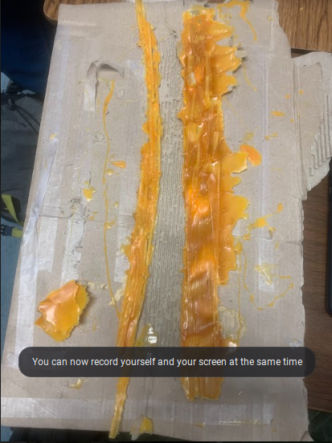

9/2/2022 - This week we learned how to use tinkercad. Also we leaned the basics to machanical engeneering. Finally we did a challenge with tinkercad and I got to be a judge and it was fun.
9/16/2022 - This week we are starting do a project. and also still learning more things about tikercad and AWS
9/23/2022 - This week we put are projects to the test to pop a ballons.
9/30/2022 - This week we disassembled a computer, and than reassembled it. Also learned what parts are in a computer.
10/7/2022 - This week the unit was bioengineering. We made CADs of an animal prosthetic. I decided to make a bird's wing prosthetic. It was a little hard but did it.
10/21/2022 - This week countined the bottle rocket our design was perfect but the tape ripped on us );.
10/27/2022 - This week we started our environmental engeneering unit, Our was creatind a water filter using a sota bottle. It was successful, but did make the water super clear.
11/3/2022 - This week we tinker caded a circuts and connected them to lights. I also made the light really bright which was cool.
11/10/2022 - This week we actually worked on circut irl. It was easyer than I expected and way more better then in tinker cad.
11/18/2022 - This we talked about if there is more doors or wheels in the school. We decided that there is more wheels because every door has a wheel in it.
12/2/2022 - Today we found out we aren't going to have a final but going to do a final project. Are final project will be a brige, we starting to make models before our final brige.
12/20/2022 - We are now going to test our final project (the brige). Our project is 20 spigetti's together and put lots of glue in it.
1/13/2023 - This week we learned about business engineering. We learned that there are various jobs regarding finances, laws, and aesthetic when it comes to engineered products, in order to give the consumer a good experience. Also we went in groups to present our invensions, my group did a under water helper robot.
1/20/2023 - Today we learned a little bit more on environment engeneering, but last week we learned more about business. We also did a presentation about wht product is needed. Our groups said a robot that can save people in the water.
1/27/2023 - This week we learned about chemical engineering. We learned about how chemical engineers work on scaling up chemical processes and engineering the machines to produce chemicals, such as medicines, beers, etcetera, whereas chemists work on creating the actual chemical reactions.
2/3/2023 - This week we began planning our second semester engineering project. Also me and my parter we're going to do the mouse trap car, we also made a tinker cad.

2/10/2023 - This week we began actually building our Second Semester Project. For now we just tried make the wheels it was good becasuse we were just trying to see what will work.

2/17/2023 - This week we continued building our mouse trap finally found good wheels and we made a base.
2/24/2023 - This week we continued building our mouse trap, We have everything together we just need to make it run with the mouse trap and a string.

3/3/2023 - This week me and my partner finished our mouse trap project. Also today we tested our car, unfortunately when I was testing the car my partner didn't video it put took a pictue.
3/24/2023 - This week we are starting to work on a Egg drop project. We started to desighn it on tinkercad, we added a bollon, cotton, string, but we might add more later on.